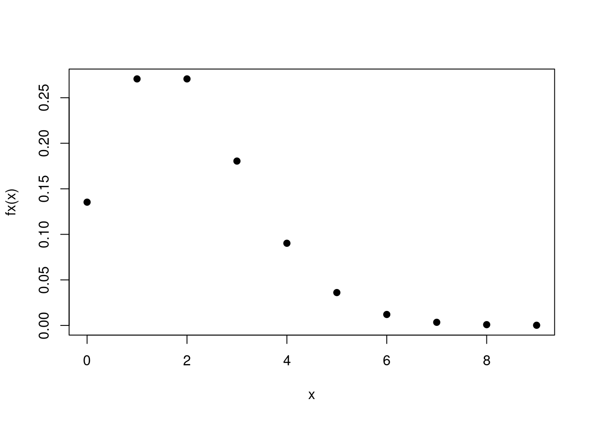
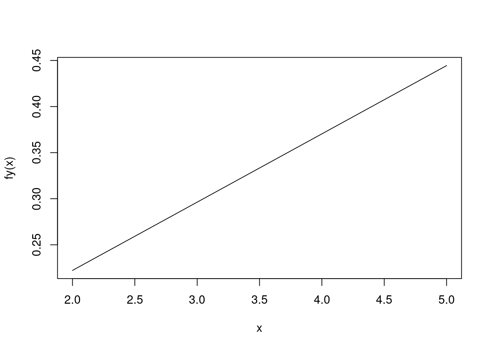
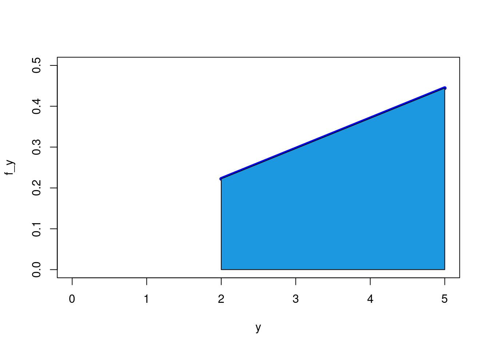
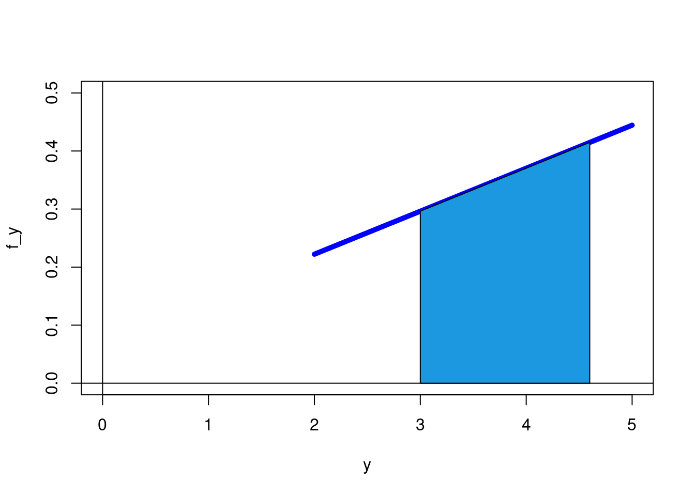

R permite representar funciones de distribucion de probabilidad (variables aleatorias discrettas) y tambien funciones de densidad de probabilidad ( en el caso continuo)
A continuacion se presenta ejemplos de cada caso
Sea X una variable aleatoria discreta con funcion de distribucion de probabilidad: \[ f(x) = \left \{ \begin{matrix} \dfrac{\exp\{-2\} 2^{x}}{x!} & x=0,1,2,3,4.... \\ &\\ 0 & \mbox{ en cualquier otro caso}\end{matrix}\right. \]
fx=function(x){
(exp(-2)*2^x)/factorial(x)}
x=0:9
plot(x,fx(x),pch=19 )
# Tabla de probabilidades
f_x=round(fx(x),4)
data.frame(x,f_x)## x f_x
## 1 0 0.1353
## 2 1 0.2707
## 3 2 0.2707
## 4 3 0.1804
## 5 4 0.0902
## 6 5 0.0361
## 7 6 0.0120
## 8 7 0.0034
## 9 8 0.0009
## 10 9 0.0002Nota: El rango de X (\(R_X\)) corresponde a los enteros positivos : 0,1,2,3,4,5,6,…..
x=0:100
sum(fx(x))## [1] 1Nota se toma n=100 como un numero grande de valores de la variables. fx(100)=1.83826e-129
sum(fx(3:6))## [1] 0.3187898\[E[X]= \sum_{i=0}^{\infty} x_{i} f(x_{i}) \]
x=0:100
f_x=fx(x)
Ex=sum(x*f_x)
Ex## [1] 2\[V[X]=E[X^{2}]-E[X]^{2}\]
x=0:100
Ex=sum(x*fx(x))
Ex2=sum(x^2*fx(x))
Vx=Ex2-Ex^2
Vx## [1] 2Sea X una variable aleatoria continua con funcion de densidad de probabilidad :
\[ f(y) = \left \{ \begin{matrix} 2(1+y)/27 &\mbox{, } 2 \leq x \leq 5 \\ &\\ 0 & \mbox{, en cualquier otro caso}\end{matrix}\right. \]
fy=function(y){2*(1+y)/27}
curve(fy, 2,5) # forma 1
y=seq(2,5, by=0.1)
f_y=fy(y)
y1=c(2,y,5)
f_y1=c(0,f_y,0)
plot(y,f_y, type="l", ylim=c(0,0.5),col="blue", lwd=5, xlim=c(0,5)) # forma 2
polygon(y1,f_y1,col = "#1b98e0") 
\[\int_{-\infty0}^{\infty} f(x) \,dx = 1 \]
integrate(fy,2,5)## 1 with absolute error < 1.1e-14\[ P(3 \leq X \leq 4.6) = \int_{3}^{4.6} f(x) \,dx\]
y=seq(2,5, by=0.1)
f_y=fy(y)
y1=seq(3,4.6, 0.1)
f_y1=fy(y1)
y1=c(3,y1,4.6)
f_y1=c(0,f_y1,0)
plot(y,f_y, type="l", ylim=c(0,0.5),col="blue", lwd=5, xlim=c(0,5)) # forma 2
abline(h=0, v=0)
polygon(y1,f_y1,col = "#1b98e0") 
integrate(fy,3.0,4.6)## 0.5688889 with absolute error < 6.3e-15\[E[X] = \int_{\infty}^{\infty} x f(x) \,dx\]
fy1=function(y){y*(2*(1+y)/27)}
integrate(fy1,2,5)## 3.666667 with absolute error < 4.1e-14\[V[X]=E[X^{2}]-E[X]^{2}\]
fy1=function(y){y*(2*(1+y)/27)}
Ex=integrate(fy1,2,5)
fy2=function(y){y^2*(2*(1+y)/27)}
Ex2=integrate(fy2,2,5)
Vx=Ex2$value-Ex$value^2
Vx## [1] 0.7222222